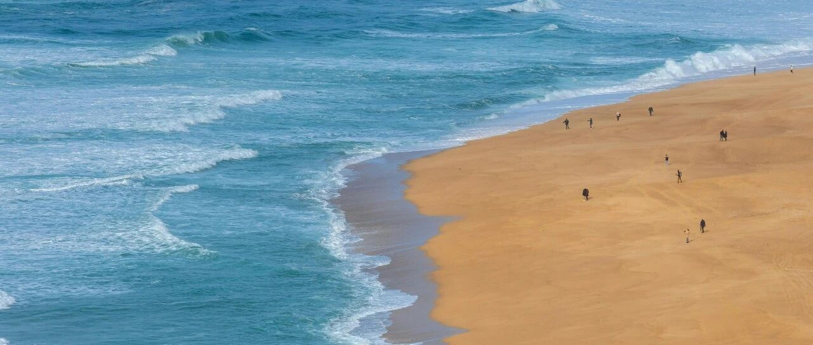

我落袋为安了，舒服~
我最近几个月已经彻底调整好作息，不再熬夜盯盘，晚上十一点半准时休息。
每天也就花几分钟看一下结果，然后设置好买卖价位，其他的就没再搭理它。
这样做的好处是很轻松，整个人没有一点压力，账户里的资金跟数字一样，面对涨跌的感觉不大。
不好的也有，就是没有深入去了解和分析，偶尔会出现个别判断错误。
这次又出现了:联合健康发布财报后，大跌6%，收盘价510.59美元。
我原来预期发布财报后，联合健康能稳住540-545之间。
财报数据不及预期，而且川普上任后可能对医疗保险等有新的政策和调整，是这次大跌的两个原因。
嗯，看到了吧，我一样会错。我认真看了下财报，也分析了一下后续，认为联合健康还是值得长期持有的。
数据不及预期的，还有苹果，主要是中华区的销售数据大跌。因此带崩了苹果股价，大跌4%，收盘价228.26美元。
特斯拉也跌了3.36%，收盘价413.82美元。
大跌的主要就这三个。
台积电发布财报，数据远高于预期，股价一度大涨5%，达到221.95美元，最终收涨3.86%，收盘价214.79美元。
我现在的台积电成本79.6美元，如果按照设置好的225和232美元共减仓10%，那成本会控制在50美元左右。
后续我就没打算再减仓台积电了，看好它的未来，现在美区工厂也已投产。
23年买了英伟达，24年入手和抄底台积电，是这两年最正确的决策之一，收益也相当满意。
25年，我暂时还没选好要买哪个，没有特别看中的。今年的美股主题是震荡，震荡中找机会，只能保持更大的耐心和定力。
其他的普遍微跌和微涨，美股在美东时间17日这个交易日后，会休市3天，再开市就是21日了。
那会川普上台，只要不搞什么利空政策出来，美股会在情绪助推下拉升，特别是川普受益股，比如特斯拉和大饼，大饼的“影子股”MSTR也在其中。
MSTR涨了1.77%，收盘价367美元，这会盘前又涨到了3.3%+，一度触及381.5美元。
我设置的380和385美元清仓，看了一眼，卖掉了50%，想想索性把余下的也设置380清仓。
达到预期了，就见好就收，不贪多，即便后面还会再涨一涨。我主要是不想后面再有什么变数，少赚点，落袋为安最重要。
MSTR的波动太大了，很适合做短线的波段套利，但同样也有下跌的风险，毕竟最近的行情剧烈震荡。
至此，我在MSTR这只个股上，获利超过一千万刀。几次操作都提前写得很详细，买卖的价位节点等，也都还算精准。
知足了，后续暂时没有打算再做MSTR，我已经达到了自己的目标和预期，即便它还能继续获利。
至于做空，更要谨慎，做空的难度比做多高很多，需要有天时地利人和。
时刻记住咱们是来赚钱的，不是来赌博或送钱的，不要意气用事、情绪上头。
… …
小儿子今天出院了，诺如病毒+甲型H1N1…
原本计划这两天带他们出去滑雪，然后去新加坡和澳洲一趟，现在行程只能调整。
这两天在医院陪他，感觉孩子一下子长大了，曾几何时，在医院陪他还是刚出生后不久的事，一下子从小宝宝变成了小学生…
嗯，真有点不习惯，长大得太快了。
他身体素质一直都很好，很少生病。我写他比较多，是因为这个年龄的孩子还有童趣，再长大点就不一样了。
家里老二最受宠，老大最成熟稳重，小儿子最活泼好动。我发现还得是女读者比较厉害，更敏感，能察觉到这点的基本上都是女读者，哈哈。
期末考试结束，小儿子一度很忐忑，怕自己没考好。
我告诉他，只要过程中用心了、尽力了，结果好坏都没关系，就是用来检查哪些知识点还没有掌握的，补缺补漏就行了。
结果他告诉我，是怕没都考一百分，不好意思去找爷爷、姑姑、叔叔等要红包。我……
最终还是都考了满分，拿了四五个奖状回来，然后这两天在病房里一直收红包，嗯，小财迷。
我只能把之前写过的话，拿来对他说:
读书学习主要是为了提升自己的下限，不是为了用来拿奖励，奖励只是这个过程中的一些点缀。
上限？靠机遇和见识。机遇掌控不了，能掌控的只有学习，通过学习，去见识更大的世界和更好的自己。
我希望自己的孩子，培养好内在，有耐心、韧性、抗压，对外在的东西看的淡一些，有胆气，有“万物不为我所有，但万物皆为我所用的”的洒脱，把失败作为一种体验，而不计较得失。
嗯，期望值挺高的，但培养注定是个漫长的过程，需要耗费很多的精力和时间。我能做的，就是引导、陪伴，以身作则，言传身教。
希望他们有个标杆和榜样，但不盲目崇拜任何人。
在我接触过的群体中，包括我自身在内，绝大多数人其实都很普通，远见、格局、能力都一般。
天纵奇才似的印象，只不过是因为有了滤镜的加持，要学会祛魅。
我们每个人都不可能看到自身之外的东西。
每个人在别人身上看到的东西都与自身相等，我们只能用我们现有的见识、智力等，来思考和打量他人。
世界很奇妙，始终在映射。正如你对我的看法，是你自己对这个世界的认知，是你自己在世界上的映射。
所谓:你是什么样的人，你看别人就是什么样的人。
我们每个人，就像大江大河中的小小扁舟，身不由己地接受时代给予我们的所有激荡。
同时，也在这样的身不由己中，完成自己的更新和塑造。
就这样吧。